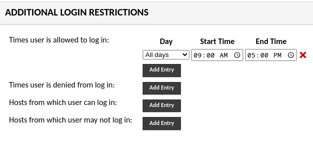

Enforcing advanced login and connection restrictions#
A feature of Guacamole as of version 1.6.0 is an extension that allows you to
enforce advanced restrictions on both user logins to Guacamole as well as the
use of connections and connection groups. The extension,
guacamole-auth-restrict, decorates other authentication extensions that
contain user, group and/or connection information, and allows you to apply
restrictions to those objects for the time(s) that users are allowed to log
in, the hosts from which users may log in, the time(s) that certain
connections and balancing connection groups may be used, and the hosts from
which certain connections and balancing connection groups may be used. The
goal is to give administrators of a Guacamole system additional flexibility in
restricting when and from where various parts of the system may be used.
As this extension decorates underlying extensions, it must be used alongside one that is capable of storing additional information for users, user groups, connections, and connection groups. Currently the only extension provided by the Guacamole project that is capable of doing this is the JDBC authentication extension.
Warning
You will need to restart the Guacamole web application in order to complete configuration. Doing this will disconnect all active users, so please:
Do this only at a time that you can tolerate service unavailability, such as a scheduled maintenance window.
Keep in mind that configuration errors may prevent Guacamole from starting back up.
Installing/Enabling support for advanced restrictions#
Guacamole is configured differently depending on whether Guacamole was installed natively or using the provided Docker images. The documentation here covers both methods.
Native installations of Guacamole under Apache Tomcat
or similar are configured by modifying the contents of GUACAMOLE_HOME
(Guacamole’s configuration directory), which is located at
/etc/guacamole by default and may need to be created first:
Download
guacamole-auth-restrict-1.6.0.tar.gzfrom the release page for Apache Guacamole 1.6.0 and extract it.Create the
GUACAMOLE_HOME/extensionsdirectory, if it does not already exist.Copy the
guacamole-auth-restrict-1.6.0.jarfile from the contents of the archive toGUACAMOLE_HOME/extensions/.Proceed with the configuring Guacamole for the newly installed extension as described below. The extension will be loaded after Guacamole has been restarted.
Note
Download and documentation links for all officially supported extensions for a particular version of Guacamole are always provided in the release notes for that version. The copy of the documentation you are reading now is from Apache Guacamole 1.6.0.
If you are using a different version of Guacamole, please locate that version within the release archives and consult the documentation for that release instead.
Docker installations of Guacamole include a bundled copy of Apache
Tomcat and are configured using environment
variables. The startup process of the Docker image automatically populates
GUACAMOLE_HOME (Guacamole’s configuration directory) based
on the values of these variables.
- If deploying Guacamole using Docker Compose:
You will need to add at least one relevant environment variable to the
environmentsection of yourguacamole/guacamolecontainer, such as theRESTRICT_ENABLEDenvironment variable:RESTRICT_ENABLED: "true"
- If instead deploying Guacamole by running
docker runmanually: The same environment variable(s) will need to be provided using the
-eoption. For example:$ docker run --name some-guacamole \ -e RESTRICT_ENABLED="true" \ -d -p 8080:8080 guacamole/guacamole
If RESTRICT_ENABLED is set to false, the extension will NOT be
installed, even if other related environment variables have been set. This can
be used to temporarily disable usage of an extension without needing to remove
all other related configuration.
You don’t strictly need to set RESTRICT_ENABLED if other related
environment variables are provided, but the extension will be installed only if
at least one related environment variable is set.
Completing installation#
Guacamole will only reread its configuration and load newly-installed extensions during startup, so Tomcat will need to be restarted before these changes can take effect. Restart Tomcat and give the new functionality a try.
You do not need to restart guacd.
Hint
If Guacamole does not come back online after restarting Tomcat, check the logs. Configuration problems may prevent Guacamole from starting up, and any such errors will be recorded in Tomcat’s logs.
The environment variables that configure the behavior of Docker can only be set at the time the Docker container is created. To apply these configuration changes, you will need to recreate the container.
- If your Guacamole container was deployed using Docker Compose:
Simply making the desired changes to your
docker-compose.ymland runningdocker compose upis sufficient. Docker Compose will automatically recognize that the environment variables of the container have changed and recreate it.- If your Guacamole container was deployed manually (using
docker run): You wll need to manually use
docker rmto remove the old container and then manually recreate it withdocker runand the new environment variables.
Hint
If Guacamole does not come back online after recreating the container, check the Docker logs. Configuration problems may prevent Guacamole from starting up, and any such errors will be recorded in the Docker logs for the Guacamole container.
Using advanced restrictions#
Once the extension is installed and the web application restarted, an additional section of options will appear in the administrative pages of Guacamole that will allow administrators to configure the additional restrictions for various objects within the Guacamole system. The new section of options looks like this:
The next sections will cover how each restriction impacts the availability of various objects in the system.
User Logins#
Additional settings can be applied to users and user groups that will restrict the ability of those individual users or members of the groups to log in to Guacamole.
Restricting logins based on day and time#
This extension introduces the ability to restrict logins to the Guacamole system based on the day of the week and the time of day, and to combine these restrictions in a way that allows for flexibility in those schedules.
As an example, let’s say that you have a user or group of users whose access you’d like to restrict to your normal working hours of 9 AM to 5 PM, any day of the week. You would add a restriction like so:

However, you’ll notice that this includes all days of the week, so perhaps you’d like to limit it to only your normal work-week, which happens to be Monday through Friday:
In the above image, you can see that we allow 9 to 5 every day of the week, but then we specifically prohibit logins on Saturday and Sunday, all day, in order to prevent the weekend logins.
These basic examples demonstrate the ways in which you can combine the allowed and denied login times to create a schedule that supports your use case. There is more discussion below on the order in which rules are processed and which takes precedence.
If a user attempts to log in at a time not allowed by the time-based restrictions that apply to that user, an error will be displayed on the login page:
A note about timezones#
Creating restrictions that involve day and time can be tricky when factoring in the timezones of users, particulary if you have users spread out around the world. This extension stores the restrictions in UTC, translating them from the local timezone of the administrator. When administering these restrictions it is important to keep in mind how those restrictions will actually impact users.
Consider the following example that may help to clarify how this works in practice:
An administrator is located in the US Eastern timezone (EDT, UTC - 4).
A user is located in the Central European timezone (CEST, UTC + 2).
The administrator creates a restriction for the user limiting the ability of the user to log in between 09:00 AM and 05:00 PM every day.
This restriction is stored in the database to allow logins every day between 01:00 PM and 09:00 PM UTC.
The user in the Central European timezone would actually be allowed to log in between 03:00 PM and 11:00 PM.
This is likely not the behavior that you want, so the restrictions entered for the users - and connections - should be done with consideration for where the users are located and how it will actually apply to those users.
This is further complicated by Daylight Savings Time, which is still observed in a large portion of the world. As the database stores the restrictions in UTC, a restriction entered by an administrator in the US Eastern Timezone during Daylight Savings Time (Summer Time) for 09:00 AM to 05:00 PM will shift back an hour in the non-DST period, and actually apply from 08:00 AM to 04:00 PM.
Restricting logins based on host#
The ability to restrict logins based on the client from which a user is attempting to log in is also provided by this extension. The fields for storing these hosts can be filled in using three possible formats for the host: resolveable host names, IP addresses, and/or subnets in IP CIDR notation. The IP addresses and subnets may be either IPv4 or IPv6.
Warning
If you will be configuring Guacamole to consider users’ IP addresses, it is important to make sure that Guacamole is receiving correct IP address information for all clients.
If Guacamole is behind a reverse proxy, such as for SSL termination, the IP addresses of all users will appear to be the IP address of the proxy unless additional configuration steps are taken. Be sure to follow the documentation for configuring forwarding of client IP information!
Important
If you use hostnames in this field, the system running Guacamole Client MUST be able to resolve those hostnames back to IP addresses in order to verify if the IP address from which the user is logging in is allowed. If a hostname is entered into either the allow or deny field, and Guacamole cannot resolve the hostname, it will deny the login, unless it can match the user’s IP address to some other entry in one of the lists. Thus it is very important that, if you use hostnames, you make sure that the ability of the Guacamole system to resolve those hostnames is consistent.
As an example, suppose that you have a group of users that you’d like to restrict logins such that they can only log in from a specific internal subnet - let’s say 192.168.123.0/24. You would simply put that subnet in the allowed hosts box, and Guacamole would allow access for users to log in from IP addresses within that subnet, but block access from all other subnets:
However, let’s say that you have a router on that subnet, 192.168.123.1, and you’d like to make sure that a user attempting to log in from a client that appears to be coming from that router will always be denied. You can do this like so:
Again, as we’ll discuss later on, it’s important to understand the order in which these restrictions are processed.
If a user attempts to log in from a client that is not allowed by the host-based restrictions applied to that user, an error will be displayed on the login page:

Users and User Groups#
As has been alluded to a few times, these additional login restrictions can be applied either to individual users, or, perhaps more helpfully, to entire groups of users. While the processing order of the rules themselves is important, we’ll take a moment to note, now, how restrictions work when used on users and user groups.
First, if restrictions are applied to both users and a user group of which that user is a member, then the restrictions placed on the user will take precedence over those on the user group. For example, if you deny login at a certain time to a user group, but add a rule to a member of that group to allow logins at a time that overlaps with the deny time of the group, the login will be allowed. Conversely, if you’ve allowed logins for a group at a particular time, but you’ve denied a login for a specific user who is a member of that group at a given time, the login will be denied. Similar logic applies to the host rules that govern a user’s ability to log in.
Second, Guacamole attempts to pull all effective user groups of which a user is a member and process the restrictions across all of those groups. This includes nested groups, as well. The caution, here, is to be aware of what groups you’re applying rules on and how those groups relate - if you rely on complex group nesting within your Guacamole installation, you can end up with very complex restriction scenarios that make it difficult to sort out when a user can log in and when they cannot. Keeping your group nesting as simple as possible will help avoid these situations.
Connections and Connection Groups#
This extension allows for the restricting the use of specific connections and/or connection groups (of the balancing variety) based on the same criteria by which you can restrict user logins - day/time of week and/or client address.
The examples given above for user logins can be slightly updated to see some use-cases for connections. You might host an application through Guacamole that you’d like to make sure is only available during your normal business hours. Or, perhaps you have a balancing connection group that you want to make sure is only used by users who are logging in from a certain subnet within your firewall, and not from any public Internet clients. The user interface for these restrictions for Connections and Connection Groups is identical to the interface shown above for Users and User Groups.
If a restriction applies to a Connection or Connection Group that results in access being denied to a connection, the user will receive an error indicating that they do not have access to the connection:
How Restrictions are Processed#
When dealing with restrictions that add this level of complexity - multiple time schedules, user and user groups, and IP addresses and subnets - it’s important to understand how the system interprets these restrictions, how they relate to one another, and the order in which these restrictions are processed.
Here are a few key items to keep in mind:
System administrators are exempt from login restriction rules. If you apply restrictions to either a specific user or a group, but a user who is a system administrator attempts to log in, the restrictions will be bypassed and a warning will be logged to the Guacamole log file.
However, restrictions applied to Connection and Connection Group objects will apply to anyone who tries to connect, regardless of their status as an administrator of the system or the individual connection.
When no additional restrictions are present, the login or connection is implicitly allowed.
If only “allow” rules are added, the login or connection is implicitly denied if those rules are not met. For example, if a rule is added to a user group allowing logins between 09:00 AM and 05:00 PM, users who are members of that group will be allowed during that time, but denied at any other time, regardless of the fact that a deny rule has not been created.
If only “deny” rules are added, the login or connection is implicitly allowed if those rules are not met. For example, if you add a rule to a connection to deny access between 06:00 PM and 12:00 AM, access to that connection will be allowed at any time that falls outside of the specified deny rule.
Deny rules always take precedence over allow rules when there is an overlap. If you create a time-based login restriction that allows logins at a given time, and another restriction that denies logins at a certain time and these times overlap, the login will be denied at any time that the Deny rule applies, regardless of whether or not the allow rule also applies.
Similarly, when working with the host-based restrictions, if you allow access to a certain IP address, but deny access to a subnet of which that IP address is a member, the login (or connection) will be denied.
As mentioned above, individual user rules are processed before, and thus take precedence over, user group rules. If a user is explicitly allowed or denied, that rule will apply regardless of whether a rule on a group of which that user is a member would apply.
Time-based restrictions are processed prior to host-based restrictions, but both will be taken into account. If a user is configured to be allowed at a certain time, but denied from a certain host, the login will be allowed if both rules allow it and denied if either the time or host rule denies it. The order, here, is only an issue in noting what error message the user may receive during login or connection attempt - if both a time restriction and a host restriction deny the action, then the error the user receives will note the time restriction.